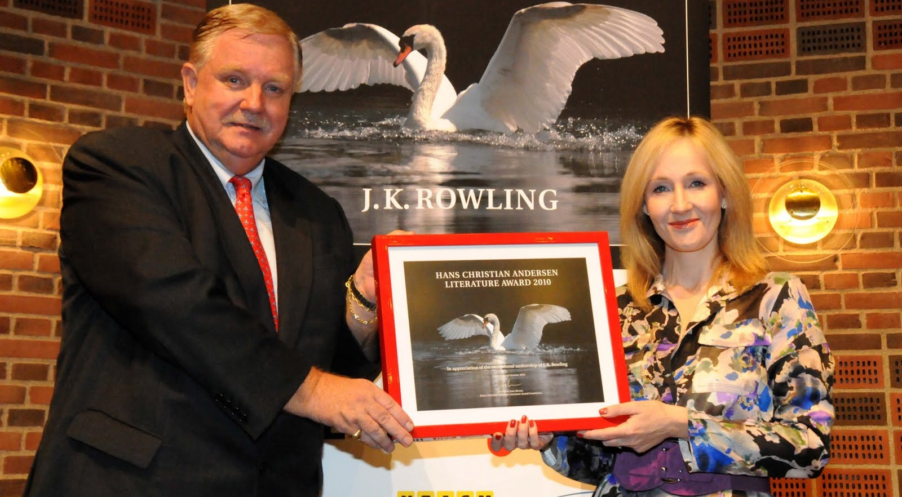

J.K. Rowling
Novelist, Screenwriter, Philanthropist

J.K.Rowlings with Chairman of the H.C.Andersen Literature Committee Jens Olesen
Here's a timeline of J.K. Rowling's life:
- 1965 - Joanne Rowling was born at Yate General Hospital just outside Bristol.
- 1990 - Conceived the idea of Harry Potter while sitting on a delayed train from Manchester to London King’s Cross.
- 1992 - Moved to northern Portugal to teach English as a foreign language, married Jorge Arantes.
- 1993 - Had a daughter, Jessica, returned to the UK to live in Edinburgh, carrying a suitcase containing the first three chapters of Harry Potter and the Philosopher’s Stone
- 1997 - Book published by Bloomsbury Children’s Books under the name J.K. Rowling.
- 1998 - First novel published in the US under a different title, Harry Potter and the Sorcerer’s Stone.
- 2001 - Film adaptation of the first book released by Warner Bros.
- 2001 - Wrote two small volumes, appear as the titles of Harry’s school books within the novels. Fantastic Beasts and Where to Find Them and Quidditch Through The Ages published in 2001 in aid of Comic Relief.
- 2008 - The Tales of Beedle the Bard published in aid of her international children’s charity, Lumos.
- 2012 - Her digital company Pottermore launched, where fans enjoyed news, features and articles, as well as content by her.
- 2016 - Collaborates with Jack Thorne and John Tiffany on an original new story for the stage. Harry Potter and the Cursed Child Parts One and Two now running at The Palace Theatre in London’s West End. The script book was published (Little, Brown) to mark the play’s opening in July 2016, and instantly topped the bestseller lists.
J.K. Rowling has recieved many honours and awards, including:
- 1998 & 1999 - Booksellers Association Author of the Year.
- 1998 & 1999 - Children’s Book of the Year, British Book Awards.
- 2001 - Order of the British Empire (OBE).
- 2003 - Prince of Asturias Award for Concord, Spain.
- 2004 - WH Smith Fiction Award.
- 2007 - Blue Peter Gold Badge.
- 2008 - Commencement Day Speaker, Harvard University, USA.
- 2008 - The Edinburgh Award.
- 2008 - James Joyce Award, University College Dublin.
- 2008 - South Bank Show Award for Outstanding Achievement.
- 2008 - Lifetime Achievement Award, British Book Awards.
- 2009 - Chevalier de la Legion d’Honneur: France.
- 2010 - Hans Christian Andersen Award, Denmark.
- 2012 - Freedom of the City of London.
- 2016 - PEN America Literary Service Award.
- 2017 - Companion of Honour, for services to literature and philanthropy.
If you have time, you should read more about this incredible writer and philanthropist on her personal page.